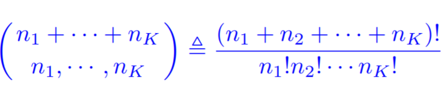
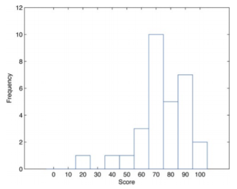
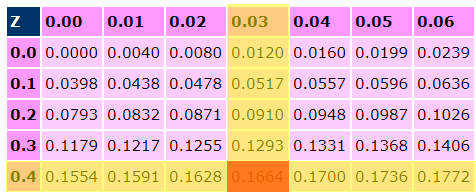

Foundations of Computer Science
Matthew Barnes
Contents
Introductory 6
Greek letters 6
Mathematical properties 6
Logic symbols 6
Set theory 7
Basics 7
Definition 7
Notation 7
Membership 7
Cardinality 7
Common sets in maths 7
Empty set 7
Operations on sets 8
Union 8
Intersection 8
Difference 8
Predicates 8
Naive set theory 8
Reasoning about sets 8
How to relate sets 8
When are two sets equal 9
Products and sums of sets 9
Ordered pairs 9
Cartesian product 9
Sum (or disjoint union) 9
Functions between sets 9
Picture of a function 9
Notation 9
Range 10
Functions of several variables 10
Operations on functions 10
Composition 10
Inverting functions 10
A taxonomy of functions and the isomorphism theorem 10
Injective functions 10
Surjective functions 10
Bijective functions 11
Isomorphism theorem 11
Function spaces and powersets 11
The graph of a function 11
Function spaces 11
Powersets 11
Sizes of infinity 12
Countable sets 12
Uncountable sets 12
Diagonalisation proof 12
Cantor’s Theorem 12
Cantor-Bernstein-Schröder Theorem 12
Relations 12
Relations between sets 13
Digraphs 13
Equivalency 13
Equivalence relations 13
Equivalence classes 13
Partitions 14
Partial Orders 14
Total Orders 14
Propositional and predicate logic 15
Propositional logic 15
Syntax 15
Formulas 15
Backus-Naur form 15
Trees 15
Syntax trees 16
Syntactic conventions and brackets 16
Semantics 16
What is the semantics of a formula? 16
Truth tables 17
Semantics as a (recursively defined) function 17
Tautologies 17
Formal proofs 17
Semantic entailment 18
Formal proof systems 18
Soundness 18
Completeness 18
Natural deduction 19
Proofs in natural deduction 19
Rules of natural deduction 19
Properties of natural deduction 21
Predicate logic 21
What’s the difference? 21
Arities 21
Example predicate logic formulas 22
Syntax 22
BNF for predicate logic 22
Free and bound variables 22
Syntactic conventions 22
Semantics 23
Semantics of predicate logic 23
Semantics of terms 23
Linear algebra 23
Vectors 23
Gaussian Elimination 24
Row reduction 24
Matrix representations 24
Row operations 25
How many solutions 25
Row operations as matrix multiplication 26
Linear dependence 26
Finding linear dependence with algebra 26
Finding linear dependence with calculus 27
Kernel / Nullspace 27
Span 27
Matrix multiplication rules 28
Transpose 28
Inverse properties 28
Matrix determinants 28
Minor 28
Cofactor 29
Determinant 29
Inverse of a 3x3 matrix 29
Eigenvalues and eigenvectors 31
Calculating eigenvalues 31
Calculating eigenvectors 32
Combinatorics 33
Principle of inclusion and exclusion 33
Pigeonhole principle 33
Fibonacci sequence and recursion 33
Proof by induction 33
Counting by bijections 34
Bit strings 34
Generalised sum and product rule 35
Sum rule 35
Product rule 35
Generalised product rule 36
Permutations 36
Circular arrangements 36
Combinations 37
Counting subsets 37
Binomial expansion 37
Vandermonde Identity 38
Multinomials 38
Probability and statistics 39
Descriptive statistics 39
Ordered stem and leaf diagram 39
Histograms 39
Sample sizes 39
Measures of central location 40
Skewness of relative frequency histograms 40
Measures of variability 41
Relative position of data 41
Percentiles 41
Quartiles 41
Box plot 42
Interquartile range 42
The Empirical Rule 42
Chebyshev’s Theorem 43
Basic concepts of probability 43
Random events 43
Sample space 43
Events 43
Probability of events 44
Tuple 44
Combinatorial analysis 45
Basic sampling 45
Subset of sample 45
Partitions of a set of size k 45
Number of successes in a sample 46
Difference between k successes and successes on k specified
draws 47
Conditional probability 47
Basic probability theory 47
Total probability 47
Bayes’ Theorem 47
Distributions 47
Random variables 48
Discrete random variables 48
Continuous random variables 48
Binomial Distribution 49
Normal Distribution 50
Standard Normal Distribution 52
Probabilities for standard normal distribution 52
Introductory
Greek letters
-
α (alpha)
-
β (beta)
-
ɣ (gamma)
-
δ (delta)
-
ϵ (epsilon)
- µ (mu)
-
σ (sigma)
- φ (phi)
- Ψ (psi)
-
ω (omega)
Mathematical properties
-
Associative: a + (b + c) = (a + b) + c
-
Commutative: a + b = b + a
-
Transitive: A > B, B > C, then A > C
-
Distributivity: A(B + C) = AB + AC
Logic symbols
-
∀ (for all)
-
∃ (there exists)
-
∄ (there does not exist)
-
∴ (therefore)
-
| (such that)
-
. (such that)
-
: (such that)
Set theory
Basics
Definition
-
Set: a group or collection of elements
-
Repetition is not allowed
-
The elements define the set
-
Two sets are the same if they both have the exact same
elements.
Notation
-
{0, 1} is the set with elements 0 and 1
-
{0, 1} and {1, 0} are the same sets
-
{0, 1, 0} and {1, 0} are the same sets
-
{0,...,9} and {0,1,2,3,4,5,6,7,8,9} are the same sets
-
{1,3,5,...} is the set of odd numbers
Membership
-
If element x is in X, then we write x ∈ X
-
If element y is not in X, we write y ∉ X
Cardinality
-
|X| is the number of elements in the set X
Common sets in maths
-
N is the set of natural numbers (0, 1, 2, 3,
4...)
-
Z is the set of integers (0, 8, 67, 33, 20...)
-
R is the set of real numbers (7, 23, 6/7, pi)
-
C is the set of complex numbers (3, 9i, 6 + 2i, 9 +
12i...)
Empty set
-
∅ is the empty set. It is a set with no
elements.
-
|∅| = 0
Operations on sets
Union

Associative
Commutative
|
Intersection

Associative
Commutative
|
Difference

NOT associative
NOT commutative
|
Predicates
-
Predicate: a function φ(x) that returns a true/false value
-
When φ(x) = true, we say ‘it holds for x’ or it ‘satisfies x’
Naive set theory
-
You can make a subset using a predicate:
-
{ x | x ∈ X & φ(x) }
-
Looks through each element of X. If φ(x) is true, x
goes in the subset. If not, x is not in the subset.
Reasoning about sets
How to relate sets
-
A set X is a subset of Y when every element X is also in
the set Y
-
X⊆Y means X is a subset of Y
-
X⊂Y means X is a subset of Y, but X and Y aren’t the same (proper subset)
-
This is always true: X⊆X
-
This is always true: ∅⊆X
When are two sets equal
-
X and Y are equal sets when both conditions are true:
Products and sums of sets
Ordered pairs
-
Like a set, but order matters. (0, 1) is an ordered
pair.
-
(0, 1) != (1, 0)
Cartesian product
-
X×Y = { (x,y) | x∈X & y∈Y }
-
{a, b} × {x, y} = { (a, x), (a, y), (b, x), (b, y)
}
-
|X×Y| = |X| × |Y|
-
NOT commutative, NOT associative
Sum (or disjoint union)
-
X+Y = { (x,0) | x∈X} ∪ {(y,1) | y∈Y }
-
{a, b} + {x, y} = { (a, 0), (b, 0), (x, 1), (y, 1) }
-
|X + Y| = |X| + |Y|
Functions between sets
Picture of a function
Notation
-
Function f that takes in elements from set X and outputs
elements from set Y:
- f : X→Y
-
X is the domain
-
Y is the codomain
-
Two functions are the same if, for all inputs, their
outputs are the same: f(x) = g(x)
Range
-
Range: Largest subset of the codomain such that f(x) ∈ R
(where R is the range)
-
Every element of R can be obtained by passing through some
value of x through f(x)
Functions of several variables
-
If a function has multiple inputs, its domain is the
cartesian product of sets
-
+ : N×N→N
Operations on functions
Composition
-
f : X→Y and g : Y→Z then f ; g : X→Z or
g∘f
-
f ; g : X→Z = g( f(x) )
-
This is associative
Inverting functions
-
f : X→Y then f-1 : Y→X only if f has an inverse
-
If f(1) = 2, then f-1(2) = 1
A taxonomy of functions and the isomorphism theorem
Injective functions
-
A function is injective if f(x) = f(x’) implies that x = x’
-
Each input must have one unique output
-
Surjective functions
-
A function is surjective if for all y ∈ Y there exists
an x ∈ X such that f(x)=y
-
The function must map onto the whole codomain for it to be
surjective
-
Bijective functions
-
A function is bijective if it is injective and
surjective
Isomorphism theorem
-
If a function is a bijection, it has an inverse.
-
If a function has an inverse, it is a bijection.
Function spaces and powersets
The graph of a function
-
A set can define a function like this: { (x, f(x)) | x
∈ X }
-
Function spaces
-
A function space is a set of all functions from one set to
another.
-
YX is a function space. It is a set that contains all
functions from X to Y.
-
|YX| = |Y||X|
Powersets
-
A powerset P(X) is a set containing all the subsets of
X
-
P( {0,1} ) = { ∅, {0}, {1}, {0,1} }
-
P(∅) = {∅}
-
P(P(∅)) = P({∅}) = { ∅, {∅} }
-
| P(X) | = 2|X|
Sizes of infinity
Countable sets
-
A set X is countable if you can make a bijection from the
natural numbers (0, 1, 2, 3, 4, 5...) to the elements of X.
-
{1, 2, 3, 4...} is a countable set
-
Z = {... -2, -1, 0, 1, 2...} is a countable set
-
N x N is a countable set
Uncountable sets
-
A set X is uncountable if there are no bijections from the
natural numbers (0, 1, 2, 3, 4, 5...) to the elements of
X
-
R is an uncountable set
Diagonalisation proof
-
The diagonalisation proof is a type of proof that proves a
set is uncountable. It works like this:
-
You want to prove set X is uncountable.
-
Set up a bijection f : N → X where N is the set of natural numbers.
-
Set up a list or a grid of possible solutions.
-
Select diagonally from that list/grid to make a new element
of X.
-
Change every value of that diagonal element.
-
Show that ‘f’ cannot contain that new
element.
-
Proof by contradiction; there is no bijection
‘f’.
-
If there is no bijection, then X cannot be countable.
- Example:
-
Suppose that we have a bijection f : N→R
-
Where f(x) = xa,b xc,b xd,e .... where
“x something, something” is a digit within the real number output of
f(x).
-
f(0) = x0,0 x0,1 x0,2 x0,3 x0,4
x0,5 x0,6...
-
f(1) = x1,0 x1,1 x1,2 x1,3 x1,4
x1,5 x1,6...
-
f(2) = x2,0 x2,1 x2,2 x2,3 x2,4
x2,5 x2,6...
-
f(3) = x3,0 x3,1 x3,2 x3,3 x3,4
x3,5 x3,6...
-
f(0) = x0,0 x0,1 x0,2 x0,3 x0,4 x0,5
x0,6...
-
f(1) = x1,0 x1,1 x1,2 x1,3 x1,4 x1,5
x1,6...
-
f(2) = x2,0 x2,1 x2,2 x2,3 x2,4 x2,5 x2,6...
-
f(3) = x3,0 x3,1 x3,2 x3,3 x3,4 x3,5 x3,6...
-
So now we’ve picked out the ‘diagonal
number’ represented above:
-
x0,0 x1,1 x2,2 x3,3 x4,4 x5,5 x6,6 ...
-
Now, let’s take each digit and change it’s
value so that each value is now different from what it was
previously:
-
x0,0 x1,1 x2,2 x3,3 x4,4 x5,5 x6,6 ...
-
Now we have created a new number. There should be some f(x)
that equals this number, because f is supposed to be a
bijection.
-
Is it f(0)? It can’t be, because x0,0 is different
from x0,0.
-
Is it f(1)? It can’t be, because x1,1 is different
from x1,1.
-
Is it f(2)? It can’t be, because x2,2, is different
from x2,2.
-
We could keep going forever, but we’ll never find an
f(x) that equals this number because this number will always
be different somewhere down the line.
-
Therefore the function ‘f’ is not surjective. If
it is not surjective, it cannot be bijective. If there is no
bijection to map N to R, then R is uncountable.
Cantor’s Theorem
-
For any set X, the cardinality of P(X) is strictly
greater.
Cantor-Bernstein-Schröder Theorem
-
If there exist injective functions f: X→Y and g:
Y→ X then X and Y have the same cardinality.
Relations
Relations between sets
-
A relation between sets X and Y is the subset of X ×
Y
-
It’s like a function, but without the rules
-
If R is a relation from X to X, it’s a ‘relation on X’
-
The full relation is X × Y
-
The empty relation is ∅
-
The identity relation on X is { (x, x) | x ∈ X }
-
They can be composed just like functions, like this: R ;
S
-
A function is a special kind of relation, except that you
cannot have multiple outputs with functions
-
The number of possible relations from X to Y is 2|X||Y| because relations are subsets of the cartesian
product X × Y, so all possible relations between X and
Y can be found in the powerset of X × Y.
Digraphs
-
A digraph is a directed graph
-
It can be represented as a set of ordered pairs
-

Equivalency
Equivalence relations
-
An equivalence relation is a relation ~ on a set X that
satisfies 3 axioms:
-
Reflexivity: x~x
-
Symmetry: x~y, therefore y~x
-
Transitivity: x~y and y~z, therefore x~z
-
An equivalence relation returns either true (they are
equivalent) or false (they are not equivalent)
-
An example is the equals sign = on the set of integers.
Equivalence classes
-
An equivalence class of a is a set of all elements in X
that are equivalent to a.
-
It is written like this: [a]
-
X/~ denotes the set of all equivalence classes with respect to ~ upon X.
-
Another name for X/~ is the ‘quotient of X with respect to ~’
Partitions
-
A collection of subsets of X that, when all unioned, will
make up X without any overlaps.
-
The set of equivalence classes X/~ contains all partitions
of X.
Partial Orders
-
A partial order is a relation ~ on the set X if it
satisfies these axioms:
- Reflexive
- Transitive
-
Anti-symmetric: if x~y and y~x then x = y
Total Orders
-
A total order is a partial order that satisfies this
property:
-
For all x and y, either x~y is true or y~x is true
-
An example of a total order is less than or equal to
Propositional and predicate logic
Propositional logic
Syntax
Formulas
-
Formulas are built up from:
-
Propositional variable symbols (p, q, r...)
-
Unary operation symbol ¬ called negation
-
Binary operation symbol ∧, ∨, → called
conjunction, disjunction and implication
-
constant symbol ⊥ called falsity, or
contradiction
-
brackets ( , )
Backus-Naur form
-
Backus-Naur form is a notation technique to describe the
syntax of languages
-
The BNF of propositional logic could be this:
-
V ::= p | q | r | s | ... (propositional variables)
-
F ::= V | ⊥ | ¬F | F ∧ F | F ∨ F | F →
F (formulas)
-
The left-hand side must be replaced with one of the
right-hand side expressions encapsulated by |. For example,
if we had
-
We must replace it with ‘V’,
‘⊥’, ‘¬F’ etc. In this
example, we could change it to:
-
But now we must replace the other F’s, because the
left-hand side is nonterminal, meaning we cannot just leave
‘F’ or ‘V’ in our formula. We keep
replacing the nonterminals until we get just expressions
found on the right-hand side (called terminals)
-
F ∧ F (same as before)
-
¬F ∧ F (replace first F with ¬F)
-
¬V ∧ V (replace both F’s with
V’s)
-
¬p ∧ q (replace both V’s with propositional
variables)
-
By using BNF, any formula can be made. This can be
visualised as a recursive process.
Trees
-
-
A tree is a mathematical structure that has nodes and arcs.
-
The beginning node (usually at the top) is called the root.
-
Each node can have zero or more children.
-
Each node that is not the root will have a parent.
-
You cannot have any cycles.
Syntax trees
-
A syntax tree is a representation of a formula using a
tree.
-
-
This is sometimes called ‘abstract syntax
trees’
Syntactic conventions and brackets
-
¬ binds tighter than ∧ and ∨
-
∧ and ∨ bind tighter than →
-
∧ and ∨ have the same precedence and associate to
the left
-
→ associates to the right
Semantics
What is the semantics of a formula?
-
Semantics means the ‘meaning’ of a formula:
what does a formula actually mean?
-
A variable can be true (T) or false (F)
-
A formula will be T or F depending on its
sub-formulas
Truth tables
-
A truth table is simply a grid displaying every combination
of T and F for a formula’s variables. You can show
semantics using truth tables by splitting up a formula into
its sub-formulas and calculating the values one by
one.
-
Semantics as a (recursively defined) function
-
2 = { F, T }
-
¬ : 2 → 2
-
∨: 2×2 → 2
-
∧: 2×2 → 2
-
→: 2×2 → 2
-
V = { p, q, r...} (set of propositional
variables)
-
σ: V → 2 (sets values to the variables, e.g. σ(p) = T
will set variable p to true)
-
⟦ some formula ⟧σ: F → 2 (this function will take a formula and convert it to
a truth value through recursion, by splitting up a function
into its subfunctions, a.k.a using semantics)
-
Using this function, you can do:
-
⟦⊥⟧σ = F
-
⟦p⟧σ = σ(p)
-
⟦ φ ∨ ψ ⟧σ = ∨(⟦ φ ⟧σ, ⟦ ψ ⟧σ)
-
⟦ φ ∧ ψ ⟧σ = ∧(⟦ φ ⟧σ, ⟦ ψ ⟧σ)
-
⟦ φ → ψ ⟧σ = →(⟦ φ ⟧σ, ⟦ ψ ⟧σ)
-
⟦ ¬ φ ⟧σ = ¬(⟦ φ ⟧σ)
-
As you can see, this function will split up a formula into
its sub-formulas until it reaches the variables, at which it
will replace it with its truth value in the σ
function.
Tautologies
-
If a formula is T no matter what truth values its variables
are, it’s called a tautology.
-
If a formula is T through at least one assignment of its
variables, it’s satisfiable.
-
Two formulas are logically equivalent when they evaluate to
equal truth values for any assignment of truth values of all their variables
-
Note: logical equivalence is an equivalence relation on the
set of all formulas!
Formal proofs
Semantic entailment
-
If a formula φ is a tautology (always true no matter
what), write ⊧ φ
-
The symbol ⊧ is called “semantic
entailment”
-
Suppose that Γ is a set of formulas
-
Γ ⊧ φ (read Γ semantically entails
φ) means: if all of the formulas in Γ are true,
then φ will be true.
-
⊧ φ is a shorthand for ∅ ⊧ φ
because you don’t need other formulas to be true for
φ to be true; φ will always be true no matter what
because it’s a tautology.
Formal proof systems
-
A formal proof system is a collection of rules that you can
use to prove theorems.
-
Natural deduction is an example of a formal proof
system.
-
Γ ⊦ φ means that we can use the formulas in
Γ in a formal proof system to prove φ
-
If you can prove φ without using any other formulas,
write ⊦ φ which is a shorthand for ∅ ⊦
φ.
Soundness
-
‘Soundness’ is a property of a proof
system.
-
If Γ ⊧ φ is true, then the proof system
with Γ is sound.
-
Soundness basically means that if you manually plugged in
true and false values into Γ and φ, or if you used
a truth table to prove it, it would all work fine. It
doesn’t necessarily mean that you can prove it, but
you still know that it’s correct.
-
A way to visualise soundness is this:
-
You have this mathematical formula:
-
-
And you want to prove it to others. However, you
don’t really know how to prove it; you just know that
it works. You could punch a bunch of values in your
calculator to show that it works, but you still
haven’t proved it for all cases.
-
This is an example of sound (because it’s right), but
not complete (because you can’t prove it).
Completeness
-
‘Completeness’ is a property of a proof
system.
-
If Γ ⊦ φ is true, then the proof system
with Γ is complete.
-
Completeness basically means that you can use the proof
system with Γ to prove that φ is true. It
doesn’t necessarily mean that it’s correct, it
just means that you can prove it.
-
A way to visualise completeness is this:
-
You start with the following formula
-
-
Multiply by a on both sides
-
-
Subtract b squared
-
-
Factorise both sides
-
-
Divide out (a - b)
-
-
Substitute in a for b because a = b
-
-
Combine terms
-
- Divide by b
-
-
This proof is not correct, because it allows division by
zero (a - b is zero).
-
This is an example of complete (because you’ve proved
it) but not sound (because you’re not correct).
Natural deduction
Proofs in natural deduction
-
A proof can be seen as a tree with:
-
leaves as assumptions
-
the root as the proved formula (Q.E.D.)
-
the nodes are determined by proof rules
-
Proof rules fall into two categories:
-
Introduction - introduces a logical connective
-
Elimination - eliminates a logical connective
Rules of natural deduction
|
Rules for conjunction
|

|
|
Rules for implication
|

|
|
Discharging assumptions
|

|
|
Rules for negation
|

|
|
Rules for disjunction
|

|
|
All
|

|
Properties of natural deduction
-
Natural deduction is sound and complete.
Predicate logic
What’s the difference?
-
Propositional logic talked about true and false
values
-
Predicate logic talks about elements of a set X
-
A predicate is a function that returns true or false.
Arities
-
Given a set X, a function with arity n∈N (also sometimes called n-ary function) on X is a
function with type Xn→X
-
It’s basically a function that takes in n parameters
and outputs a single output
-
Examples are nullary (n = 0), unary (n = 1), binary (n =
2), ternary (n = 3) etc.
Example predicate logic formulas
-
Example: Let friends be a binary relation symbol, where
friends(x,y) means that y is a friend of x.
-
∀x.∀y. friends(x,y) → friends(y,x)
-
If x is a friend of y, y is a friend of x
-
∀x.∃y. friends(x,y)
-
Everyone has at least one friend
-
∃x.∀y. friends(x,y)
-
There exists at least one person who is friends with
everyone
Syntax
BNF for predicate logic
-
T ::= V | f(T, T,...,T)
-
f(T, T,...,T) means any function capable of n T’s as
parameters
-
Terms must be treated as sets and variables of sets
-
F ::= R(T, T,...,T) | ⊥ | ¬F | F ∧ F | F ∨
F | F → F | ∃x. F | ∀x. F
-
R(T, T,...,T) means any relation capable of n T’s as
parameters
-
Formulas ‘F’ must be treated like propositional
variables because they will always return true or
false.
Free and bound variables
-
A variable in a formula is either free or bound.
-
Free is when a variable could be anything
-
Bound is when a variable is in the scope of a quantifier
(like ∃ there exists or ∀ for each)
-
f(x) =
y (x,
y free)
-
∀x.
f(x)=y (x
bound, y free)
-
∃y.∀x. f(x) =
y (x, y
bound)
Syntactic conventions
-
The scope of quantifiers exceeds all and covers all
-
∀x,y. R(x,y) → S(y,x)
- is
-
∀x,y. ( R(x,y) → S(y,x) )
-
Common abbreviation for quantifier repetition:
-
∀x,y. φ(x,y)
- is
-
∀x. ∀y. φ(x,y)
Semantics
Semantics of predicate logic
-
A set A called the domain
-
For each n-ary function symbol f, a function f : An→A
-
For each n-ary relation symbol R, a subset R⊆An
-
Given a function σ from variables to elements of A,
any term now has a meaning as an element of A
Semantics of terms
-
⟦x⟧σ = σ(x)
-
⟦f(t1,t2,...,tk)⟧σ = f(⟦t1⟧σ,⟦t2⟧σ,...,⟦tk⟧σ)
Linear algebra
Vectors
-
A vector is a column of numbers that maps one position to
another on a space
-
An example of a vector:
Gaussian Elimination
Row reduction
- If we had:
-
-
To reduce this, we could:
-
Add row 1 to −3 times row 3, and set that to row
3
-
Add row 1 to () times row 2, and set that to row 2
-
Add () times row 2 to row 3, and set that to row 3
-
This will be three transformations:
-
-
And will transform the set of equations into this (row
echelon form):
-
-
From there, we can make all the first coefficients 1:
-

-
With this, you can solve by substitution.
Matrix representations
-
You can represent that previous problem using matrices in
the form Ax = b:
-
-
You could add syntactic sugar to this by using an augmented
matrix (A|b):
-
-
You can perform all of the operations as mentioned
previously to achieve this augmented matrix:
-
-
Reduced row echelon form is when you have row echelon form,
but all the 1’s are the only non-zero elements in
their columns, e.g:
-
Row operations
-
Swap 2 rows: ρi ↔ ρj
-
Multiply all entries in a row by a non-zero constant:
ρi ← kρi
-
Replace a row by the sum of itself and a multiple of
another row: ρi ← ρi + kρj
-
Two matrices are row equivalent if you can derive one from
the other using these operations.
-
If two augmented matrices are row equivalent, they will
have the same solutions.
How many solutions
-
If there is a contradiction (e.g. 0 = 1), no solutions
-
If there are no contradictions and each row has a pivot, unique solution
-
If there are no contradictions, but there is at least 1 row
with no pivot, infinite solutions
Row operations as matrix multiplication
-
Multiply all entries in a row by a non-zero constant
-
Replace a row by the sum of itself and a multiple of
another row
-
The definitions of P and E are as follows:
Linear dependence
-
Ax = b where b = 0 is a homogeneous equation
-
x = 0 is always a solution
-
x != 0 is a non-trivial solution
Finding linear dependence with algebra
-
If you can find
-
-
Those vectors are linearly dependent
-
If you cannot find a non-trivial solution, then those vectors are linearly independent
Finding linear dependence with calculus
-
Let’s just say you had vectors and sets of
vectors:
-
- Since:
-
-
S1 is linearly dependent.
-
However, since there is no way to get V1 from V3, S2 is linearly independent.
-
If you can derive one vector from others in a set of
vectors, that set of vectors is linearly dependent. If
they’re all completely different, then that set is
linearly independent.
Kernel / Nullspace
-
The kernel or nullspace of a matrix A is the set of all
vectors V such that a vector v in V will map the matrix A to
zero.
-
Basically if you had a vector ‘v’ and a matrix
‘A’, and you multiplied them together like this:
Av, but then the answer you get is 0, then the vector
‘v’ will be in the ‘kernel’ of
A.
-
-
Where V is the set of all vectors
Span
-
W is in the span of V = { V1, V2, V3 ... } if you can use the vectors in V to get to
W.
-
E.G. if W = 3V1 + 2V2 - 4V3 then W is in the span of V.
-
If there are more vectors to dimensions in V, then V is linearly dependent and underdetermined (fat):
-
-
(column vectors)
-
If there are more dimensions to vectors, then V is overdetermined (thin):
-
-
Matrix multiplication rules
-
A(xB + yC) = xAB + yAC distributivity
-
A(BC) = (AB)C associativity
-
AB ̸= BA non-commutative multiplication
Transpose
Inverse properties
-
If A−1 exists, Ax = 0 admits only trivial solution.
-
x |→ Ax is injective.
-
Upon row reduction, every row has a pivot if inverse
exists. In reduced row echelon, A is equivalent to the
identity matrix.
-
Columns of matrix where inverse exists are linearly
independent.
Matrix determinants
Minor
-
A minor m(aij) of matrix A is the determinant of the submatrix formed by
deleting the i-th row and j-column from A:
-
-
The determinant of a 2x2 matrix, like in the above image,
is:
-
Cofactor
-
The cofactor is defined with the following equation:
-
-
It basically adds a 1 or -1 coefficient to the minor
Determinant
-
The determinant is defined with the following
equation:
-
-
Where i can be any row of matrix A and n is the number of
columns matrix A has
Inverse of a 3x3 matrix
-
Let’s just say we have a matrix A:
-
-
Firstly, we need to get its determinant.
-
I will pick row 3 to calculate the determinant on, but you
can pick any row, like I’ve mentioned above.
-
To get the determinant, you’ll need to calculate a
row’s 3 minors:
-
-
m(A31) = (2)(1) - (2)(1) = 0
-
-
m(A32) = (0)(1) - (2)(1) = -2
-
-
m(A33) = (0)(1) - (2)(1) = -2
-
Now you will need to get their cofactors:
-
cof(A31) = (-1)3+1 * 0 = 0
-
cof(A32) = (-1)3+2 * -2 = 2
-
cof(A33) = (-1)3+3 * -2 = -2
-
And now you can get the determinant by doing this:
-
det(A) =
A31 * 0 +
A32 * 2 +
A33 * -2
- det(A) =
0 * 0 +
1 * 2 +
2 * -2
- det(A) = -2
-
Hold onto that value for a moment; we’ll need it
later.
-
Now, let’s transpose matrix A. That means flipping
the rows and the columns (picture it like a y = -x
reflection):
-
→
-
Now, find all the minors of the transposed matrix (sounds
like a lot of work, but it’s not that hard. It’s
just that there’s a lot of them):
-
-
Now put all the minors into a matrix of their own. This is
called the 'adjugate' matrix, represented by
Adj(A):
-
-
Find the cofactors of those minors and replace the elements
with them (basically add -1 and 1 coefficients). Instead of using the formula, you can just remember this
matrix layout. It might be easier to remember that:
-
-
Now times that matrix by 1 / det(A) to get the inverse of
A:
-
-
-
-
You have now calculated the inverse of a 3x3 matrix!
Eigenvalues and eigenvectors
-
Av = λv
-
λ = eigenvalue
-
v = eigenvector
-
If you apply the matrix transformation A on an eigenvector
v, it’s the same as a scalar multiplication of scale
factor λ (eigenvalue).
Calculating eigenvalues
-
To calculate the eigenvalues of A, set up the
equation:
-
-
For this example, let:
-

-
Now, simplify that equation into one big matrix:
-
-
-
-
Find the determinant of that matrix:
-
-
Make it equal to 0, factorise and solve:
-
-
You have now found the eigenvalues of matrix A!
Calculating eigenvectors
-
To calculate an eigenvector, you need its corresponding
eigenvalue.
-
Set up the following equation:
-
-
Where v is going to be the eigenvector you will solve for.
Now, sub in A and the eigenvalue and solve for v.
-
-
Use an arbitrary vector for v, with the dimensions making
sense, so that you can solve for it.
-
-
Do the same thing for the other eigenvalue, and you will
have calculated all the eigenvectors!
Combinatorics
Principle of inclusion and exclusion
Pigeonhole principle
-
If there are more elements than there are slots, then at
least 2 elements will share the same slot.
- e.g:
-
You have 11 pigeons and 10 pigeonholes.
-
You don’t have enough pigeonholes to allocate each
pigeon a hole.
-
Therefore at least 2 pigeons must share 1 hole.
Fibonacci sequence and recursion
-
The fibonacci sequence is a sequence where an element is
the sum of the previous two elements
-
{ 1, 1, 2, 3, 5, 8, 13 ... }
-
You can use recursion to define this:
Proof by induction
-
You have a proposition P upon x
- Induction:
-
1) Prove that P(1) is true
-
2) Let P(n) be true
-
3) Prove that P(n+1) is true if P(n) is true
-
4) If P(n+1) is true, and P(1) is true, then P(2) is
true.
-
5) If P(n+1) is true, and P(2) is true, then P(3) is
true.
-
6) If P(n+1) is true, and P(3) is true, then P(4) is true
etc. etc.
-
Therefore proved for all Natural numbers
Counting by bijections
-
If |A| is known and f : A --> B a bijection, then |B| =
|A|
Bit strings
-
A bit string is a way of representing one of the possible
combinations of choice.
- Example:
-
Let’s just say you had strawberry doughnuts, chocolate doughnuts and vanilla doughnuts.
-
A customer has to pick up to 6 doughnuts for one box. They
can pick any flavours they want, as long as it’s 6
doughnuts.
-
They could pick 2 strawberry, 3 chocolate and 1 vanilla.
-
You could represent this with the stars and bars
method:
-
★★|★★★|★
-
With the number of stars on the left being
strawberry,
-
the number of stars in the middle being chocolate,
-
and the number of stars on the right being vanilla.
-
Bit strings are basically stars and bars, but with 0
instead of stars and 1 instead of bars:
-
00100010
-
If you need n doughnuts, and have k types, your bit string
will be of length:
-
And the number of 1’s in your bit string will
be:
-
The number of ways of choosing n doughnuts of k types
is:
Generalised sum and product rule
Sum rule
-
Use a sum + to represent ‘OR’
- Example:
-
Q. What’s the number of ways you can roll two equal
even numbers with two dice?
-
You can roll two 2’s or two 4’s or two 6’s.
-
1 + 1 + 1 = 3
-
There are 3 ways to roll two equal even numbers with two
dice.
Product rule
-
Use multiply * to represent ‘AND’
- Example:
-
Q. How many ways can you roll an even number and an odd
number with two dice?
-
You can roll an even number 3 ways (2, 4, 6) and you can roll an odd number 3 ways (1, 3, 5).
- 3 * 3 = 9
-
There are 9 ways you can roll an even number and an odd
number with two dice.
-
In how many ways can you choose 1 white and 1 black square
from 8-by-8 chessboard? If the squares cannot be on the same
row or column?
-
-
There are 32 different white squares to pick from
first.
-
Once you pick a white square, there are 8 other black
squares on the same row or column.
-
-
Therefore, the second black square you pick has 8 less
options.
-
32 * (32 - 8) = 768
-
There are 768 different ways to choose 1 white and 1 black
square.
Generalised product rule
-
Let’s just say you had a sequence:
-
{ x1, x2, x3, x4 ... xn }
-
If x1 had i1 ways of being filled in,
-
and x2 had i2 ways of being filled in,
-
and x3 had i3 ways of being filled in ...
-
and xn had in ways of being filled in, then the number of possible
combinations is:
-
i1 * i2 * i3 * ... * in
Permutations
-
Let’s just say you had to put 10 boxes into 10
slots.
-
You have 10 choices to put the first box in. You put the
first box into slot 1.
-
Now, you have to put the second box somewhere. You
can’t put it in slot 1, because it’s taken.
Therefore, you have 9 choices to put the second box in. You
put it in slot 2.
-
Now, you have to put the third box somewhere. You
can’t put it in slots 1 or 2, because they’re
both taken. Therefore, you have 8 choices to put the second
box in.
-
Following this through, you find out you have 10 * 9 * 8 *
7 * ... * 2 * 1 combinations. The shorter way to write this
is 10! (factorial). 10! = 3628800.
Circular arrangements
-
Let’s just say you have a table with 5 seats:
-
-
And you want to arrange people in it. How many different
ways can you arrange everyone in it? 5 factorial?
-
It’s actually (5 - 1)! = 4! = 24. Why?
-
Some arrangements are identical. For example, the
arrangement:
-
because, from everyone’s frame of reference, everyone
is still sitting in the same place. E.g. C is to the left of
D in both of them, E is to the right of D in both of them
etc.
-
When you want to put the first person in, you have an
option of 5 seats. But it doesn’t matter what seat you
put the first person in, the combination will still be the
same, because from the first person’s frame of
reference, there’s nobody around them. So the first
person only has 1 combination of seat arrangement.
-
If you have x seats, the number of ways you can arrange
people is (x - 1)!
Combinations
-
Let’s say you had to find the number of ways to
arrange the word GOOPPP.
-
This arrangement: GOOPPP
-
Is the same as this arrangement: GOOPPP
-
So the answer is not 6!
-
To find the answer, you need to divide 6! by the number of
indistinguishable elements factorial multiplied
together.
-
For example, we have 2 indistinguishable O’s and 3
indistinguishable P’s in GOOPPP.
-
Therefore, the number of arrangements is:
-
Counting subsets
-
Let’s say you have 10 different objects and you
wanted to pick 4. What’s the number of possible ways
you can pick 4 objects out of 10 distinct objects?
-
It is 10 choose 4, or 10C4, or
-
Binomial expansion
Vandermonde Identity
Multinomials
-

-
-
Number of ways to arrange these blocks:
-
- Is this:
-
-
So, in a way, this could be a shorthand for
combinations
Probability and statistics
Descriptive statistics
Ordered stem and leaf diagram
Histograms
-
The same set of data can also be represented as
-

Sample sizes
Measures of central location
-
Mean: Add up all the data and divide it by how many there are
(numerical average).
-
Median: Sort the list and pick the one in the middle (centre
element relative to magnitude).
-
Mode: The most often data element (most frequent value).
Skewness of relative frequency histograms
Measures of variability
-
Range: The highest data element MINUS the lowest data element
(xmax - xmin).
-
Variance: The average of the squared differences from the mean. It
is the standard deviation squared.
-
- or
-
- E[X] is the expected value function, defined as the
“integral” under the probability
distribution.
-
Standard deviation: A measure of how spread out the numbers are. It is the
square root of the variance.
-
Variance > Standard deviation for variance > 1.
Relative position of data
Percentiles
-
The percentile P of a data value x is the percent of how
high it is compared to the other data values. with 100%
being the highest and 0% being the lowest.
-
Formula: P =
- Example:
-
You have this data set:
-
2, 6, 8, 10, 12, 18, 22
-
What is the percentile of ‘8’?
-
There are 3 values less than or equal to 8.
-
2, 6, 8, 10, 12, 18, 22
-
There are 7 values in total.
-
Therefore P = = 42%
Quartiles
-
Quartiles are like percentiles, but they split the data
into quarters.
-
The first quartile Q1 is the median of the lower half of the set
-
The second quartile Q2 is the median of the whole set
-
The third quartile Q3 is the median of the upper half of the set
-
Suppose you have n ordered elements,
-
To find the median (Q2): (n+1)/2 th value
-
To find the lower quartile (Q1): (n+1)/4 th value
-
To find the upper quartile (Q3): 3(n+1)/4 th value
-
You have this data set:
- 2, 6, 8, 10, 12, 18, 22
-
What are the three quartiles?
-
2 , 6 , 8 , 10, 12, 18, 22
-
Q2 = 10, because that’s the median
-
The lower half is now 2, 6, 8, so Q1 = 6
-
The upper half is now 12, 18, 22, so Q3 = 18
Box plot
-
A box plot is simply a visual representation of
quartiles.
-
-
The lowest value in the set
-
The first quartile (median of lower half)
-
The second quartile (median of the whole set)
-
The third quartile (median of upper half)
-
The largest value in the set
- Example:
-
You have this data set:
-
2, 6, 8, 10, 12, 18, 22
-
Interquartile range
-
The interquartile range is the third quartile minus the
first quartile:
-
Q3 - Q1
The Empirical Rule
-
If a data set has an approximately bell-shaped relative
frequency histogram, then:
-
approximately 68% of the data lie within one standard
deviation of the mean.
-
approximately 95% of the data lie within two standard
deviations of the mean.
-
approximately 99.7% of the data lies within three standard
deviations of the mean.
-
The standard deviation for this set:
-
2, 6, 8, 10, 12, 18, 22
-
is 6.4. The mean is 11.1.
-
One standard deviation from the mean is:
-
-
Which can be between
-
4.7 < x < 17.5
-
According to the empirical rule, approximately 68% of the
data values in the set are between 4.7 and 17.5.
-
If my range was spread out to two standard
deviations:
-
-
-
-1.7 < x < 23.9
-
According to the empirical rule, approximately 95% of the
data values in the set are between -1.7 and 23.9.
Chebyshev’s Theorem
-
For any numerical data set
-
at least of the data lie within two standard deviations of the
mean
-
at least of the data lie within three standard deviations of
the mean
-
at least of the data lie within k standard deviations of the
mean, where k is any positive whole number that is greater
than 1.
-
This is different from the empirical rule from the use of
the words ‘AT LEAST’. According to this theorem,
it would be impossible for only ½ of the data to lie within two standard deviations
of the mean; it has to be at least ¾.
Basic concepts of probability
Random events
-
A random event is an event whose frequency will tend
towards a stable value.
- Example:
-
You flip a coin 10 times. You get 3 heads and 7
tails.
-
You flip a coin 1000 times. You get 519 heads and 481
tails.
-
If you flipped the coin infinite times, you’d see
that half the time you’d get heads, and half the time
you’d get tails. This shows that flipping heads or
tails are random events.
Sample space
-
A sample space is the set of all possible
combinations.
- Example:
-
Sample space of flipping a coin:
- S = { H, T }
-
Sample space of rolling a dice:
-
S = { 1, 2, 3, 4, 5, 6 }
Events
-
An event E is a subset of sample space S.
- Example:
-
Sample space of rolling a dice:
-
S = { 1, 2, 3, 4, 5, 6 }
-
Event that you will roll an even number:
-
E = { 2, 4, 6 }
-
As you can see, event E is a subset of sample space
S.
-
If event E1 is true or event E2 is true, then that event
can be represented as:
-
If event E1 is true and event E2 is true, then that event
can be represented as:
-
The empty set is also an event. This event is impossible;
it can never happen.
-
When , then those two events are mutually exclusive.
-
That means that they both cannot be true at the same time;
only one must be true, or neither of them.
-
The complement of E, , is true when E does not occur. Think of it like the
‘inverse’.
Probability of events
-
The probability of an event E can be expressed like
this:
-
The probability of an event must satisfy these
axioms:
-
P(E) >= 0 where E is any event
-
P(S) = 1 where S is a sample space
-
if two events are mutually exclusive:
-
if two events are NOT mutually exclusive:
-
P() = P(E) + P(F) - P(EF)
-
-
EØ = Ø
-
-
F = FE
 FEc
FEc
-
EF = FEFc = EFEc
-
(EF)c = EcFc
-
The probability of an event is:
-
E = { D1, D2, D3, ... }
-
P(E) = P(D1) + P(D2) + P(D3) + ...
-
Another probability of an event is:
Tuple
-
r-tuple = (n1, n2, n3 ... nr)
-
Order matters
Combinatorial analysis
-
Let A be a set of r-tuples, { x1 x2 ... xr }, such that there are:
-
Firstly: n1 different ways in which to choose x1,
-
Secondly: n2 different ways in which to choose x2, ...
-
Finally: nr different ways in which to choose xr.
-
Then A contains N(A) = n1 * n2 * ... * nr different r-tuples.
- Example:
-
You have a dice and you roll it 3 times.
-
Each iteration, a 3-tuple can be made of what you just
did.
-
E.g. if you rolled a 2, then a 5, then a 6, the tuple to
represent that could be (2, 5, 6)
-
You cannot roll the same value as you have done before,
e.g. (2, 4, 6) is allowed but (2, 3, 2) is not.
-
The set A contains all the possible 3-tuples that you can
do when you roll the dice 3 times.
-
In general, the 3-tuples look like this:
-
(x1, x2, x3)
-
The number of ways to choose x1 is 6.
-
The number of ways to choose x2 is 5.
-
The number of ways to choose x3 is 4.
-
Therefore, the size of set A is 6 * 5 * 4 which is 120.
There are 120 different possible outcomes of this.
Basic sampling
-
Number of ways to draw n balls from an urn containing M
distinguishable balls
-
without replacement: M choose n
-
with replacement: Mn
Subset of sample
-
Set S = {1, 2, ... , N }
-
How many subsets of S of size k?
-
Answer: N choose k
Partitions of a set of size k
-
The number of ways you can partition a set of size N so
that the 1st subset is size k1, 2nd subset is size k2 etc. and k1 + k2 + ... + kr = N
-
Answer: (N choose k1) * ((N - k1) choose k2) - ... - ((N - k1 - k2 - ... - kr) choose kr)
Number of successes in a sample
-
An urn contains M balls of which MW are white and MR = M − MW are red. A sample of size n is drawn either with or
without replacement. Let k be an integer between 0 and n.
What is the probability that the sample will contain exactly
k white balls?
-
Sampling without replacement:
-
Sampling with replacement:
-
An urn contains 10 balls. 4 are white, and 6 are red. You
take out 5. What’s the probability you will get 3
white balls?
-
n choose k is 5 choose 3, which is 10, therefore there are
10 possible ways of picking out white balls.
-
Without replacement:
-
The first time you pick out a white ball, there are 4
different white balls to pick.
-
The second time you pick out a white ball, there are 3
different white balls to pick, etc.
-
You pick out 3 white balls and 2 red balls, so the chance
of that happening through one picking is:
-
-
But you could also pick out 2 white balls, a red ball, then
a white ball, then another red ball. The chance of that
would be:
-
-
We need to cover every combination of picking balls, so we
multiply n choose k (10) to that chance, giving us which is around 24%.
-
Each time you pick out a white ball, there are 4 different
white balls to pick.
-
Each time you pick out a red ball, there are 6 different
balls to pick.
-
You pick out 3 white balls and 2 red balls, so the chance
of that happening through one picking is:
-
-
But you could also pick out 2 white balls, a red ball, then
a white ball, then another red ball. The chance of that
would be:
-
-
We need to cover every combination of picking balls, so we
multiply n choose k (10) to that chance, giving us which is around 23%.
Difference between k successes and successes on k specified
draws
-
Sample size 3, without replacement, urn with 4 white and 2
red
-
Probability of first being white, second being white and
third being red
Conditional probability
-
P(B|A) = probability of B given that A occurs
-
P(B|A) =
-
P(B|A) = if P(A) > 0
Basic probability theory
-
B is independent of A given P(B|A) = P(B)
-
A and B are independent if P(BA) = P(B)P(A)
-
A, B, C are independent if
-
P(AB) = P(A)P(B)
-
P(AC) = P(A)P(C)
-
P(BC) = P(B)P(C)
-
P(ABC) = P(A)P(B)P(C)
Total probability
-
A is an event in sample space S. Let B1, B2, B3 ... Bn be the partitions of A.
-
P(A) = P(B1)P(A|B1) + P(B2)P(A|B2) + ... + P(Bn)P(A|Bn)
Bayes’ Theorem
-
A is a possible event. Let B1, B2, B3 ... Bn be the partitions of A.
-
P(Bi|A) =

Distributions
Random variables
-
A random variable X is a variable whose possible values are
numerical outcomes of a random phenomenon, like the value of
a dice when it’s rolled. There are two types of
variable: discrete and continuous.
Discrete random variables
-
A discrete random variable is a variable which may take on
the form of an integer such as 0, 1, 2, 3, 4 ...
-
Discrete random variables are usually counts.
-
The probability of each outcome MUST:
- Sum up to 1
-
Each must be between 0 and 1
-
Value of a dice roll
-
Number of children in a family
-
Number of defective light bulbs in a box of ten
-
The probabilities of all possible discrete random variables
can be expressed in a table of outcomes to probabilities.
This is called a probability mass function.
- Example:
|
Outcome
|
1
|
2
|
3
|
4
|
5
|
6
|
|
Probability
|
1/6
|
1/6
|
1/6
|
1/6
|
1/6
|
1/6
|
-
pmf(5) = ⅙
-
where pmf = probability mass function
-
Expected value (mean) of discrete data:
-

-
Variance of discrete data:
-
Continuous random variables
-
A continuous random variable is a variable which can take
an infinite number of values. They are usually expressed not
by integers, but by a range, like 1 to 10.
-
They are in the set R (real numbers).
-
These variables are usually measurements.
- Examples:
-
Height / Weight of a person
-
Amount of sugar in an orange
-
Time required to run a mile
-
The probability of a continuous random variable is
represented by the area under a curve (or integral, in maths
terms) which is called the variable’s probability density function.
-
The curve, which represent a function p(x), MUST:
-
Have no negative values: p(x) >= 0
-
Have a total area under the curve of 1
-
Example of a continuous random variable’s probability
density function:
-
-
In this example, a variable X can be between 3 and 5. It
could be 3.56, it could be 5, it could even be
4.105829053103464516093713409346. It just keeps on going,
which is why a continuous random variable can hold an
infinite amount of values.
-
To find the probability that X will be between 3 and 4, P(3
< x < 4), you must find the area under the
‘curve’ between the values x = 3 and x =
4.
-
When you find that area, it should be 0.5. This means that
P(3 < x < 4) = 0.5.
-
Expected value (mean) of continuous data:
-
-
Variance of continuous data:
-
Binomial Distribution
-
Bernoulli trials are independent repeated random trials
that only have two outcomes: success and failure.
-
If the probability of success is p, then the probability of
failure ‘q’, is q = 1 - p.
-
A binomial distribution is a series of Bernoulli
trials.
-
Binomial distributions will only apply to discrete random variables.
-
B(n, p) denotes a series of Bernoulli trials (a binomial
distribution) with ‘n’ trials and a probability
of success ‘p’. Usually, we are interested in
the number of successes and not the order in which they
occur.
- Example:
-
You roll a dice 10 times. You decide that rolling a
‘6’ is a success, and everything else is a
failure.
-
To represent this as a binomial distribution, you could
write B(10, ⅙).
-
Probability of exactly k successes in a binomial
distribution B(n, p) is
-
Mean (expected number of successes) of a binomial
distribution:
-
Variance of a binomial distribution:
-
Probability of at least k successes is:
-
-
Or, you can go the other way round, if it’s
shorter:
-
-
You roll a dice 10 times. You decide that rolling a
‘6’ is a success, and everything else is a
failure.
-
Probability of exactly 4 successes:
-
-
Mean (expected number of successes):
-
-
Probability of at least 2 successes:
-
Normal Distribution
-
A normal distribution, or a Gaussian distribution, is an
example of a continuous random variable whose density is a
bell-shaped graph.
-
-
A normal distribution has these following
requirements:
-
mean = median = mode
-
symmetry around the center
-
50% of the values less than the mean and 50% greater than
the mean
-

-
Like how a binomial distribution is defined by the number
of trials n and the probability of success k, a normal
distribution is defined by the mean µ and the variance
σ2.
-
Normal distributions can be represented like so: N(µ,
σ2)
-
With µ and σ2, the corresponding density function is:
-
-
You probably won’t have to remember this.
Standard Normal Distribution
-
You can convert a normal distribution into a standard normal distribution.
-
The difference is that each of the standard normal
distribution’s units are actually multiples of the
standard deviation, making it easier to do calculations and
compare variables with each other.
-
-
To convert a random variable (a unit in the normal
distribution, like 1030) into a standard random variable (a
unit in the standard normal distribution, like +1) you can
use this formula:
-
-
Where Z is the standard random variable,
-
X is the random variable you want to convert,
-
µ is the mean, and
-
σ is the standard deviation.
Probabilities for standard normal distribution
-
Ones that you should just know (or can just figure
out):
-
P[Z <= 0] = 0.5
-
P[Z >= 0] = 0.5
-
P[Z <= x] = P[Z >= -x]
-
P[Z >= x] = P[Z <= -x]
-
P[x1 >= Z >= x2] = P[-x2 >= Z >= -x1]
-
P[x1 <= Z <= x2] = P[Z <= x2] - P[Z <= x1]
-
You can find the probability of a variable being in a
certain range.
-
Using a standard normal distribution table, you can look up
the probability that a standard random variable will lie
between 0 and a certain value:
-
-
For example, you could look up P[0 <= Z <= 0.43] by
looking up 0.4 and 0.03 (since 0.43 = 0.4 + 0.03):
-

-
Therefore P[0 <= Z <= 0.43] = 0.1664
-
The full table can be found here: Standard Normal Distribution Table
- Examples:
-
When you have other probability problems, split it up into
things that are either obvious or things you can look up in
a table:
-
P[x1 <= Z <= x2] =
-
P[0 <= Z <= x2] - P[0 <= Z <= x1]
-
1 - (P[Z <= 0] + P[0 <= Z <= x])
-
1 - (0.5 + P[0 <= Z <= x])
-
P[Z <= 0] + P[0 <= Z <= x]
-
0.5 + P[0 <= Z <= x]
-
While solving probability problems like this, visualise a
standard normal distribution graph in your head (or draw it out as a sketch), like this:
-